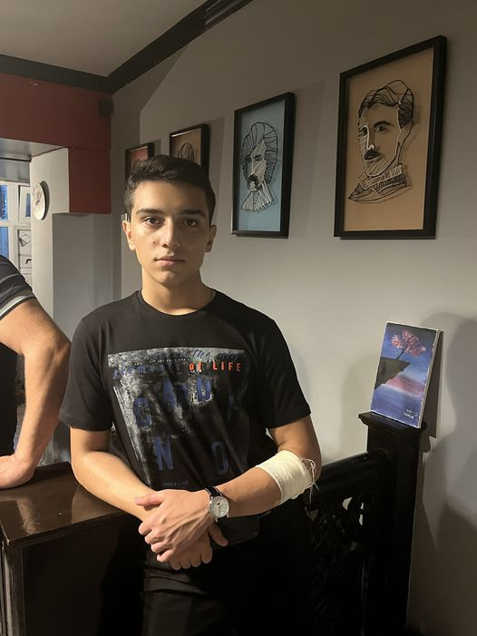

Elshad Isgandarli
BScEEE
Learn more
Elshad Isgandarli started his education in Baku, school No 149 named after
Elschin Shamiyev. From his childhood.he had enthusiasm to technical subjects like physics and math. In high
school years he participated in physics and astronomy olympiads and got successful results. As a physics
enthusiast, he study EEE at ADA University.

Umud Abutalibov
BScCS
Learn more
Umud Abutalibov is a bright and motivated student who is pursuing a degree in Computer Science at ADA
University. Despite being only 17 years old, Umud has already shown a strong aptitude for technology and a
deep passion for web development.
Umud's academic journey began at school №17 in Ahmadli, where he developed a strong foundation in computer
skills and programming. Now, as a student at ADA University, Umud is further honing his expertise and
expanding his knowledge in areas such as web design, software development, and data analysis.
With his sharp mind and dedication to his craft, Umud is well on his way to becoming a highly skilled web
developer. He understands the importance of staying up-to-date with the latest trends and technologies in
his field, and he is constantly seeking new ways to improve his skills.
Overall, Umud Abutalibov is an impressive young student with a bright future ahead of him. We have no doubt
that he will achieve great success in his academic and professional endeavors, and we wish him all the best
as he continues on his journey.

Sumaya Gafarova
BScIT
Learn more
Sumaya Gafarova was educated at No. 310 High School. She loved technical
subjects such as mathematics, physics, and chemistry. However, she did not have additional equipment in
school to study subjects such as chemistry and computer science, and she had an interest in IT. She was
lucky to pass the exam well in all these subjects and enter the university, scoring 635 points.

Maryam Mammadli
BscCE
Learn more
Maryam Mammadli was educated in Masalli region. Despite the poor
education and the lack of computers or laboratories in many schools, Maryam took 1st or 2nd place in
competitions held in mathematics, physics, and chemistry in the district during her school days. Although
she did not have the chance to study Information Technology during school, she studied Computer
Engineering at ADA University because of her interest in computers and IT and to be successful in
her future career